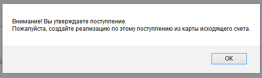
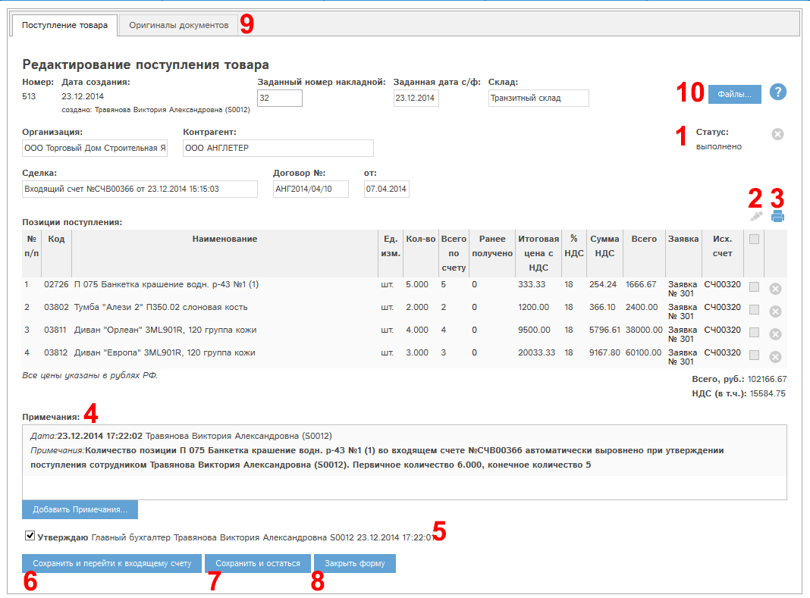
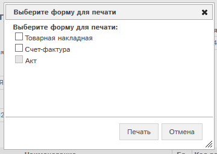
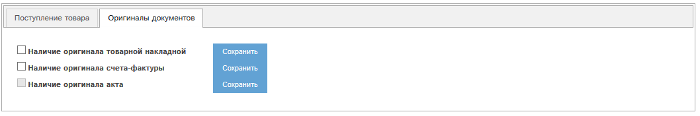
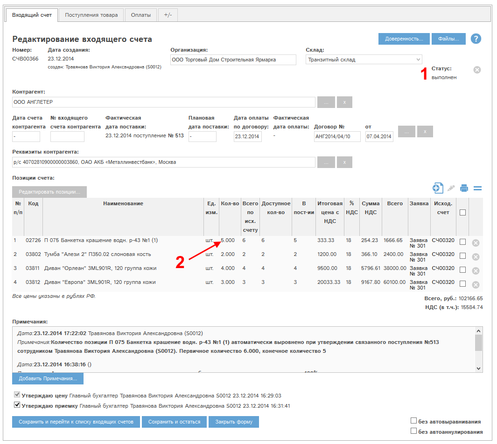

Рис. 5.42 Окно редактирования/просмотра поступления
Блоки (1)-(3) были рассмотрены ранее.
Блок (4) – Примечания полностью аналогичен блоку «Примечания» в разделе Просмотр и редактирование заявки.
Утверждение поступления (5) – при наличии у Вас прав Вы можете утвердить поступление.
Для этого необходимо проставить этот флаг и нажать кнопку «Сохранить и остаться» (4).
Для утверждения поступления необходимо заполнить поля «Заданный номер накладной» и «Заданная дата с/ф».
Данное действие так же возможно провести при наличии прав из реестра поступлений. Для этого служит кнопка «утвердить» в колонке «Статус».
Поступление переходит в статус «Выполнено».
Редактирование поступления в статусе «Выполнено» невозможно!
Для редактирования поступления необходимо снять утверждение!
Поступление из нашего примера утвердили. При утверждении поступления программа вывела напоминание провести реализацию завезенных позиций:

Рис. Напоминание о создании реализации по позициям поступления.
Окно просмотра поступления выглядит следующим образом:

Рис. 5.43 Окно просмотра/редактирования поступления. Поступление утверждено.
Кнопка «Файлы…» (10) открывает файловый реестр, содержащий файлы, прикрепленные к поступлению. Данный раздел полностью аналогичен разделу «Файлы» в заявке. (см. Просмотр и редактирование заявки)
При утверждении поступления становится активной кнопка («Печать») (3). Для поступления доступны три печатные формы:
При нажатии кнопки Вам будет предложено отметить формы для печати. После чего необходимо нажать кнопку «Печать»:

Рис. 5.44 Выбор форм для печати утвержденного поступления.
Вкладка «Оригиналы документов» (9) активна в утвержденном поступлении и позволяет указать, прикреплены ли к данному поступлению оригиналы:
Вкладка выглядит следующим образом:

Рис. 5.45 Вкладка «Оригиналы документов» в поступлении.
Для указания наличия оригинала необходимо проставить на вкладке соответствующий флажок и нажать кнопку «Сохранить».
Проверим родительский входящий счет. Откроем его в реестре счетов:

Рис. 5.47 Входящий счет после утверждения связанного поступления.
Количество позиции 02726 в счете уменьшилось со 6 до 5 (2), т.к. мы уменьшили его в поступлении, и выбрали, что подвоз проводиться не будет.
Счет в статусе «Выполнен», т.к. завезены все позиции счета. (1).
Важное замечание!
Если с поступлением связаны утвержденные реализации, то при снятии утверждения этого поступления:
Важное замечание!
Если с поступлением связаны утвержденные реализации, по позициям которых есть +/- и утверждена его выдача, то при снятии утверждения этого поступления:
Чтобы снять утверждение такого поступления, необходимо снять утверждение выдачи указанных расходов наличных.